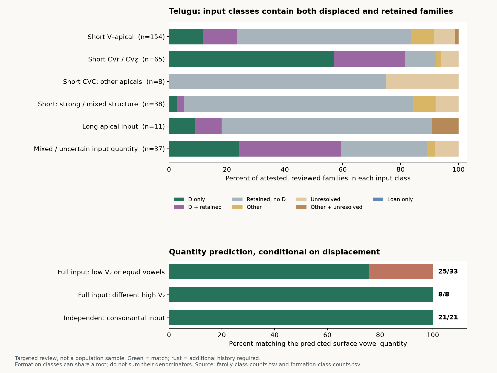

Telugu metathesis in comparative Dravidian perspective
A quantitative, etymon-by-etymon investigation of the Jambu snapshot. Analysis frozen 9 September 2026; narrative written after the comparative annotation and count audit.
Telugu metathesis has a coherent historical centre: a postvocalic apical consonant acquires an earlier position, creating either a new word-initial consonant or an initial cluster. The comparative evidence establishes this direction in numerous individual families. It does not establish an exceptionless rule selecting every affected word from its segmental input. The strongest conditioning concerns the shape of the resulting formation, especially the interaction of vowel quality, vowel deletion, contraction and consonantal suffixes. Application itself remains sensitive to lexical and morphological history, with genuine retentions inside the proposed environments.
Three distinctions change the interpretation of the evidence. First, a displaced-looking modern form can preserve an earlier metathesis, result from ordinary internal assimilation, contain an added consonant, or belong to another etymology. Second, a root and its derivatives need not share the same immediate input: a long bare root may have an independently short derivative, and a vowel-bearing stem may coexist with a consonantal one. Third, similar outcomes in related languages need not be the same historical event. Older South-Central apical displacement, later Kuvi sonorant reordering, Kondh stem–suffix stop alternations and sporadic changes elsewhere require separate accounts.
The reviewed frame contains 409 DEDR entries, reduced to 403 primary root families. Telugu has supported displacement-family evidence in 117 of 313 families with informative D/R outcomes, or 117 of 370 attested, reviewed families when ambiguous and other developments remain in the denominator. These are 37.4% and 31.6%, respectively. Neither is a language-wide metathesis rate: the review deliberately includes the previously identified Telugu cluster candidates and selected comparative controls. Of the 117 D-bearing Telugu families, 51 also contain retained-order evidence. An analysis consisting only of positive examples would obscure that coexistence.
Evidence, units and the limits of the denominator
The extraction starts from the frozen CLDF forms, edges, language, dialect and source tables. The input manifest hashes ten files; the source database has 677,797 form records and 357,003 edges, and the research extraction preserves 162,451 records relevant to its Dravidian/etymological selection. Attested language IDs are distinguished from reconstructed-language IDs using metadata, not spelling heuristics: Pengo and Parji are languages, not proto-language labels. Old Telugu is combined with Telugu, Old Malayalam with Malayalam, and the historical Kannada label pampa with Kannada for the principal family counts. The uncombined source labels remain in the evidence appendix. The resulting 43 attestation groups are not 43 statistically independent languages or dialect samples.
Each reviewed entry has a manually reasoned reconstruction, a direction argument, a proposed derivation, an input class, language-specific outcomes and exception notes. The complete casebook contains all 409 analyses; cited-evidence.tsv contains 9,823 evidence links, comprising 9,742 distinct cited form IDs and 81 research-only source observations. The raw-record appendix preserves all 17,558 records in reviewed groups, explicitly marking records that were not individually cited/adjudicated. An entry-level comparative review is not a claim to have independently checked every uncited derivative or every source page.
The outcome codes answer a particular historical question. D means a supported displacement-family development; it does not by itself prove literal segment exchange rather than assimilation plus vowel loss. R means retention of the target initial order, allowing unrelated changes elsewhere in the word. O is another development; A is an unresolved analysis; B is borrowing. A language–family cell can contain several flags. In the disjoint tables below, “D only” means D with no R, not the absence of every uncertain subsidiary form. Mixed D/R cells are shown separately. Other-only, uncertain-only, their overlap, and loan-only cells are distinct from missing attestations and attested-but-unreviewed material.
Counting follows root families, not records, dictionary editions, plural forms or causative derivatives. Six primary mergers concern closely related or duplicate lexical families, including size/measure, stroke/comb and the two demonstrative paradigms. A second partition applies 35 explicitly documented possible mergers, yielding 365 families. It is a sensitivity analysis, not a collection of accepted new etymologies. Under it, Telugu becomes 113/286 on the D/R denominator and 113/334 on the attested-reviewed denominator: 39.5% and 33.8%. The central conclusion survives the merger choices. Every table cell can be reconstructed from family-count-membership.tsv; merger reasons are in family-merge-sensitivity-proposals.tsv.
The review includes all 116 previously identified Telugu initial-cluster candidate groups. It does not exhaust the database. Of 5,548 DEDR groups, 5,139 remain outside the detailed casebook; of 2,701 Telugu-bearing DEDR groups, 375 were reviewed and 2,326 remain. An independent, deliberately inclusive screen of non-Telugu full forms found 3,489 candidate groups; 388 are reviewed and 3,101 remain pending. These screen matches are not verified reconstructed inputs. The exact remaining IDs are exported in remaining-dedr-groups.tsv and pending-input-screen.tsv. Unreviewed groups never supply negative votes.
Reconstructing the earlier order
No modern language is assumed to preserve the ancestral sequence. Direction is strongest where several branches retain the same segment order, where matching morphology survives, and where the proposed innovation agrees with independently established correspondences. Telugu itself sometimes preserves a useful full/cluster pair. Those internal pairs are corroboration, not permission to project every full Telugu form unchanged into the proto-language.
Consider mortar, DEDR 651. Tamil and Malayalam ural, Kannada oral, and Telugu rōlu support an earlier vowel–rhotic–vowel–lateral formation. A conventional representation is ur-al > or-al > rōl. A literal exchange account inserts roal before coalescence; an assimilation-and-loss account changes the second vowel toward the first and removes the first syllabic nucleus. The full comparanda establish the older order and low vowel much more securely than they establish either invisible phonetic intermediate. Reverse reconstruction would require repeated vowel insertion and corresponding rearrangement across the full-form branches.
The consonant-initial stump family, 4971, is unusually informative. Tamil and Malayalam muraṭu, Kannada moraḍu, and Telugu moraḍu independently support mor-aḍ. Telugu also has mrōḍu; Kui mrōjo provides a related cluster outcome. The sequence mor-aḍ > mrōḍ accounts for both the change in order and the long vowel, with separate stop developments in Kui. Crucially, Telugu moraḍu itself includes the stump meaning. The coexistence cannot be made deterministic by assigning “stump” and “rough” to perfectly separate outcome classes.
The day/sun family, 4559, supplies a different input. Tamil poẓutu, Kannada poẓtu/portu, and Gondi poṛdu establish the earlier full and consonantal series. Telugu proddu is compatible with poẓ-t > pẓot > proddu, with separate strengthening/voicing. Poddu can follow cluster-r loss. But Kannada portu : pottu independently demonstrates direct medial assimilation, so an eastern pod- without a cluster witness is not automatically concealed metathesis. The database's compound head ap-pōẓ is not the immediate ancestor of every time word; Telugu appuḍu/ippuḍu/eppuḍu require their own deictic-compound history.
Likewise, marbu : mrabbu ‘darkness/cloud’ 4728 and barduku : braduku ‘live’ 5372 provide independently supported medial clusters. The latter is especially important for input classification. Tamil vāẓ and Kannada bāẓ establish a long bare root, but Kannada barduku/barduŋku establishes a short expanded derivative. Telugu braduku/bratuku can reorder that derivative without an invented short allomorph. This is a legitimate morphological distinction because the full short formation exists independently; the same move is not licensed for every long-root exception.
What is conditioned in Telugu?
The traditional analysis distinguishes vowel-initial apical promotion from cluster formation in consonant-initial roots. It also distinguishes identical or low second vowels from different high second vowels and consonantal formations. Krishnamurti's formal rules, historical mechanism and discussion of lexical diffusion appear in separate parts of his synthesis; they should not be collapsed into a single fully specified phonetic law. The present classes preserve C1, V1 quantity and quality, C2 identity and structure, V2, grammatical category and independently supported formative boundaries. Unknown values remain unknown. Krishnamurti 2003, pp. 157–162.
The principal Telugu domains are as follows. “Other/A/B” combines the displayed disjoint non-D/R cells only to keep this table compact; the full count file separates all three and the O+A overlap. “Frame” includes the missing families in that input class. There are no attested-but-unreviewed Telugu cells within these reviewed families.
| Input domain | Frame | Reviewed | Missing | D only | R only | D+R | Other/A/B | D / informative | D / reviewed |
|---|---|---|---|---|---|---|---|---|---|
| Long apical | 13 | 11 | 2 | 1 | 8 | 1 | 1 | 2/10 | 2/11 |
| Mixed across merged entries | 1 | 1 | 0 | 0 | 1 | 0 | 0 | 0/1 | 0/1 |
| Mixed/uncertain quantity | 40 | 37 | 3 | 9 | 11 | 13 | 4 | 22/33 | 22/37 |
| Lexical nasal/mixed nasal inputs | 19 | 15 | 4 | 0 | 14 | 0 | 1 | 0/14 | 0/15 |
| Say/quotative morphology | 1 | 1 | 0 | 0 | 0 | 1 | 0 | 1/1 | 1/1 |
| Nonapical/uncertain input | 41 | 37 | 4 | 0 | 25 | 0 | 12 | 0/25 | 0/37 |
| Pronominal morphology | 1 | 1 | 0 | 0 | 0 | 1 | 0 | 1/1 | 1/1 |
| Short CVC: other apicals | 9 | 8 | 1 | 0 | 6 | 0 | 2 | 0/6 | 0/8 |
| Short CVr/CVẓ | 70 | 65 | 5 | 37 | 7 | 16 | 5 | 53/60 | 53/65 |
| Short strong/mixed structure | 41 | 38 | 3 | 1 | 30 | 1 | 6 | 2/32 | 2/38 |
| Short V–singleton apical | 165 | 154 | 11 | 18 | 93 | 18 | 25 | 36/129 | 36/154 |
| Uncertain initial order | 2 | 2 | 0 | 0 | 1 | 0 | 1 | 0/1 | 0/2 |
The high cluster-domain fraction cannot be compared directly with the vowel-initial fraction as an unbiased difference in historical susceptibility. The cluster sweep was selected partly from Telugu outcomes; the vowel-initial review contains a broader negative-control series. The relevant robust finding is the existence of both outcomes within independently defined classes. The broad hypothesis that all short singleton apicals in the narrow classical domains change encounters retained evidence in 134 families, is consistent with D and no R in 55, and is nondecisive in 46. This is an entry-wide falsification of obligatory application, not a fitted probability model or a refutation of every possible finer historical condition.
Low V2 does not by itself select affected words. Among short vowel-initial singleton-apical families assigned an independently supported low-a class, D occurs in 18/48 D/R-informative families, or 18/54 attested-reviewed families; ten are mixed D/R. High-i and high-u classes give 3/9 and 3/19 on the D/R denominator, respectively. These are descriptive comparisons with different ascertainment and lexical coverage. Within the low-a consonant-initial r/ẓ class, 14/17 informative families bear D, but one also retains R and three have R without D. A following low vowel therefore helps explain the resulting vowel without being a sufficient application condition.
Segment identity matters. The vowel-initial review separately records rhotics, alveolars, laterals, retroflex stops and the reconstructed retroflex approximant ẓ. It does not merge them because several eventually become r or d. The resulting Telugu reflexes can erase precisely the contrast needed to decide an etymology. In consonant-initial words, the robust native cluster series centres on rhotic/ẓ inputs; purported lateral, nasal or stop examples require closer comparison. The complete joint input-class tables provide Domain×V2, Domain×C2 and Domain×V1 counts for every attestation group, alongside C1 identity and grammatical-category counts.
Quantity is more tractable when tested on formations whose input is independently supported. The audit distinguishes full matching vowel-bearing formations, independently supported cluster formations, mixed competing inputs and conditional inputs whose exact suffix or vowel is not established. Every Telugu D-bearing primary family has at least one formation audit row; that coverage does not make every row strictly testable.
| Conditional prediction | All audited families | Matching / tested D families | Proportion | Surface exceptions | Retained evidence, including controls |
|---|---|---|---|---|---|
| Full input; low V₂ or equal vowels → long | 44 | 25/33 | 75.8% | 8 | 17 |
| Full input; different high V₂ → short | 12 | 8/8 | 100.0% | 0 | 5 |
| Independent consonantal input → short | 21 | 21/21 | 100.0% | 0 | 1 |
The proportions are conditional on displacement and on the specified input tier. A family can occur in more than one tier or formative class; these denominators must not be added. No class was reconstructed backwards from a desired long or short output. The table supports a useful conditional generalization: matched full low/equal-vowel formations commonly yield length, and the audited different-high-vowel and consonantal formations yield short vowels. It does not establish an exceptionless full-input-to-modern-output law.
Schematically, for an independently short root in an eligible apical domain, the traditional quantity hypotheses distinguish three inputs. A full (C)V₁R-V₂-X with low or identical V₂ can give (C)R-V̄-X through displacement and contraction; a full formation with a different high V₂ can lose that vowel and give short (C)R-V-X; an independently consonantal (C)V₁R-C can give short (C)R-V₁-C without contraction. Here R stands for the input apical at the reordering stage, before its later language-specific reflex, and X leaves further morphology unspecified. These are conditional historical predictions, not rules authorizing an unattested V₂. Earlier i/u > e/o before low a must also be distinguished from the later Kui–Kuvi lowering of long mid vowels discussed below.
The eight short outcomes in the full-input long-prediction class deserve individual explanations:
| Family | Independently supported input and Telugu outcome | What could explain the mismatch? |
|---|---|---|
| 474 two | ir-aṇṭ, reṇḍu | Earlier long rēṇḍ followed by shortening before the cluster is plausible. A source-level early rēṇḍ reading is relevant, but its palaeographic confirmation remains incomplete. Human iruvuru is a different, independently high-u formation. |
| 694 deer | Parji uṛup, Telugu duppi | Early medial-vowel deletion or later shortening with strengthening could intervene. A short output alone cannot establish either stage. |
| 1787 blind | Full kur-uṭ, gruḍḍi/gruḍḍu | Tulu/Kota consonantal kurḍ independently supports a syncope branch. Its existence makes kurḍ > gruḍḍ credible but does not date Telugu syncope. |
| 4993 sink | Full muẓ-uŋk, bruŋgu | Consonantal comparanda support earlier syncope as an alternative to contraction plus shortening. Initial m>b is a separate development. |
| 1767 bend | Tamil kuraŋku, Telugu kruŋgu | Full low-a and consonantal branches coexist comparatively; the consonantal route can account for short u. The low-a full form must nevertheless remain visible in the audit. |
| 2687 shrink | Tamil curukku, Telugu srukku | Kannada surku supports a consonantal stage; c>s and strengthening are separate. No evidence requires contracting uu first. |
| 4312 worm | Telugu puruvu, pruvvu | Purvu and Konda piṛvu supply consonantal alternatives. Both full and clustered retained forms prevent the output from choosing its own ancestor. |
| 4975 perish | Tamil muruŋku, Telugu bruŋgu | Medial syncope and m>b are plausible; a matching dated intermediate is lacking. This death/break family is not automatically identical with the homophonous sink family 4993. |
There are further quantity problems outside the strict table. Lā̃cu ‘desire’ 301 has a high-i base but an insufficiently matched nasal-palatal formation. Ḍekku ‘stumble’ 437 has competing low-vowel and strong-cluster comparisons. Prēgu ‘intestine’ 4193, prō̃gu ‘earring’ 4545, and mrē̃gu ‘smear’ 5082 do not independently supply the low-a suffix that would conveniently predict their long vowels. Vrīlu ‘open’ 5411 must not validate a same-vowel rule through the very -il reconstruction that the earlier analysis describes as otherwise unattested. Krishnamurti 1961, pp. 61–68, especially p. 67 §1.156; notes on pp. 129–131.

Morphology explains some contrasts, but cannot absorb every exception
Several distinctions are independently motivated and historically useful. Telugu tirugu beside trikku/trippu ‘turn’ 3246 corresponds to independently weak and strong velar/labial formations. Lōna ‘inside’ versus ullamu ‘mind’ 698 contrasts a singleton locative formation with a separately attested geminate noun. Ēḍu ‘seven’ versus ḍebbadi ‘seventy’ 910 involves a long free numeral and an independently short compound allomorph. Kīḍupaḍu and krinda 1619 similarly require long and short formations, not a single root string mechanically transformed in every context.
The destroy and descend verbs illustrate why formative consonants matter. Labial nonpast and dental/palatal past formations can become separate lexical stems; a modern velar, nasal or doubled stop need not have been an unanalyzable root-final consonant when displacement occurred. Comparative morphology can establish this distinction without counting every derivative as another sound-change event. Krishnamurti 2003, pp. 188–195.
Other proposed distinctions are not sufficient. Aḍagu/aḍãgu ‘submit’ and ḍā̃gu/dā̃gu ‘hide’ 63 share the broad low-vowel nasal formation. Alavi ‘measure’ and lāvu ‘size/strength’ 291/295 preserve divergence within one primary family. Tarcu and traccu ‘churn’ 3095 both belong to a consonantal formation. Low-a retained ara ‘half’ 229, eravu ‘borrow’ 472 and era ‘prey’ 490 remain controls. Semantic specialization may accompany the split, but observing different meanings after a change does not prove that those meanings conditioned it.
Nor do compound boundaries uniformly block or trigger displacement. Support-stone/anvil 86 has a relevant boundary; the writing/scratching family 5263 contrasts low-ay and high-i derivatives; the time family has deictic compounds. Their individual morphological histories matter more than a binary “compound” label. Modern part-of-speech labels are preserved and tabulated, but they cannot always be projected back to the period of change. The data do not support an independently validated universal noun/verb split.
The pronominal and quotative cases belong in the investigation but outside the narrow lexical-apical rule. Telugu adi : dāni- and idi : dīni- 1/410 require oblique morphology and possible analogical leveling. An apparent old dēni is not automatically an earlier proximal stage: Sastri treats the relevant forms as interrogative. The say paradigm 868 includes anan : nān, anaka : nāka, but also short anaru : naru. Nasals participate in this specific grammatical history; that does not license nasal movement in every lexical Vn root. Sastri 1969, pp. 72,178,184.
Krishnamurti's stress proposal supplies a possible phonetic mechanism. He compares Araku Konda sarás, marán with Sova srāsu, mrānu, and proposes assimilation toward the stressed second syllable followed by loss of the first nucleus. Such dialect contrasts help motivate the account, but do not constitute a dated ancestral sequence. The database lacks consistently comparable stress annotations, so assigning invisible stress according to the observed outcome would merely disguise an exception as a condition. The exact phonetic mechanism remains less securely established than the direction of the historical change. Krishnamurti 2003, p. 161, note 16.
Relative chronology and concealed metathesis
The clearest chronological result concerns destroy 277. Sastri's inscription 9, attributed to the first quarter of the seventh century, contains initial ḻaccinavānṟu; the independent Nalajanampāḍu example is attributed to 670–680. The current DHARMA readings likewise have initial ḻ, where an earlier edition sometimes read ḍ. Under the accepted readings, the displacement of the apical precedes its later Telugu stop outcome. This is materially better evidence than inferring the entire sequence from modern d-. Sastri 1969, pp. 285,291–292; DHARMA00099, line 3; DHARMA00026, lines18–21.
An inscription attributed to 890 contains ḻassi alongside aḻisina and aḻiputa. Those are different formations, so coexistence is evidence for lexical/morphological persistence, not automatically free variation in one identical environment. If the palatal cc continues a front-vowel-conditioned dental sequence, its formation must precede loss of the conditioning i. The relative order is therefore more secure than an absolute date for the whole sound change. Editorial ḻ/ḍ disagreement is not converted into two ancient dialects. Sastri 1969, pp. 310–311,350; Krishnamurti 2003, p. 195.
The below family 1619 gives a different chronological interaction. In kiẓ-nd > krinda, displacement removes the front vowel from immediate contact with the initial velar. Krishnamurti uses the surviving k to place this change before Telugu velar palatalization. Later krinda > kinda can remove the cluster while leaving the unpalatalized consonant as a historical trace. Tamil's palatalization has different apical/retroflex conditioning, so the comparison cannot simply be reduced to “Tamil is conservative.” This test cannot be extended to every unpalatalized velar: Krishnamurti also identifies earlier voicing and echo-word morphology as independent blockers. Krishnamurti 2003, p. 128, Rule14 and discussion.
Other paired forms expose concealment directly: krotta : kotta ‘new’ 2149, krovvu : kovvu ‘fat’ 2146, mrānu : mānu ‘tree’ 4711, pratti : patti ‘cotton’ 3976, vrēlu : vēlu ‘finger’ 5409, and travvu : tavvu ‘dig’ 3122. Yet korbu > kobbu in Kannada, or portu > pottu, supplies a competing internal-assimilation route for superficially similar reductions. A modern r-less reflex without independent cluster evidence remains uncertain when both histories are possible.
The initial b in the two bruŋgu families also needs its own explanation. It cannot be generated by a general Telugu m > b before r, since mrānu ‘tree’, mriŋgu ‘swallow’ 4866, and mrukku ‘become mouldy’ 5007 preserve m. A narrower phonetic history or analogical spread among similar verbs is possible, but the present evidence does not establish either. This uncertainty does not reverse the comparative evidence for earlier vowel–apical order.
Initial-cluster simplification is also language- and consonant-dependent. Eastern lēnj- ‘moon’ can be compared with full nelan-/nelenj-, while Telugu nela retains the earlier initial order 3754. The conventional eastern path loses the first consonant of nl-. Telugu usually loses cluster-r in the well-attested pairs above, but vrāyu > rāyu ‘write’ 5263 loses the first member instead. Neither language-family slogan substitutes for an etymon's particular consonants. Krishnamurti 2003, pp. 158–162.
Several tempting early dates require restraint. The Peda-Vegi Sanskrit charter's prāluragrāme attests a place-name, not a demonstrated common-noun derivation; its written regnal year and estimated absolute date have different evidential status. In the young/calf family 513, an editor's preference for ḷēnṟu partly uses metathesis theory to supply length, so it cannot independently confirm that length. The alleged seventh-century locative oḷana 698 may rest on a superseded reading now interpreted as ēḷan ‘ruling’. These records remain visible with their qualifications. DHARMA Peda-Vegi edition; DHARMA00040 apparatus; DHARMA00099.
Sastri distinguishes the old native process from later literary doublets and sporadic loan-word changes. The surviving doublets do not independently date continued productivity; nor does a late Sanskrit-derived cluster reversal. The druggādēvi cited in a Lakshmipuram inscription attributed to c.681 and the Ganj example dated 1290 are different monuments. The historical appendix keeps each source, date status, reading and inference separate. Sastri 1969, pp. 72,74,294; DHARMA00101.
Distribution across Dravidian: inheritance, renewed change and contact
The following principal comparisons use the same reviewed root frame, but each language has different attestation and review coverage. D includes the broader supported displacement-family histories described above. The zero values in other languages do not assert that those languages lack every kind of metathesis: several different processes are annotated separately.
| Language | Reviewed | Unreviewed attested | Missing | D only | R only | D+R | D / informative | D / reviewed |
|---|---|---|---|---|---|---|---|---|
| Telugu | 370 | 0 | 33 | 66 | 196 | 51 | 117/313 | 117/370 |
| Gondi | 173 | 2 | 228 | 9 | 122 | 8 | 17/139 | 17/173 |
| Konda | 141 | 1 | 261 | 23 | 92 | 12 | 35/127 | 35/141 |
| Kui | 154 | 1 | 248 | 63 | 40 | 12 | 75/115 | 75/154 |
| Kuvi | 149 | 1 | 253 | 42 | 57 | 18 | 60/117 | 60/149 |
| Pengo | 89 | 0 | 314 | 30 | 40 | 4 | 34/74 | 34/89 |
| Manda | 69 | 0 | 334 | 26 | 26 | 2 | 28/54 | 28/69 |
| Brahui | 56 | 1 | 346 | 4 | 25 | 3 | 7/32 | 7/56 |
Direct pairwise comparisons further restrict the denominator to families with D/R evidence in both languages. Telugu and Kui share D-bearing evidence in 38/91 such families; Telugu and Kuvi in 29/93; Telugu and Konda in 22/113. Mixed cells remain identifiable. In the Telugu–Kui comparison, eighteen families have Kui D while Telugu has R without D, six have the reverse pattern, and twenty-nine have R without D in both. This establishes substantial but incomplete lexical overlap. It cannot by itself identify a phylogenetic node, count historical events or demonstrate contact. Pairwise counts and membership.
Shared South-Central history is most plausible where more than a cluster shape agrees: compare the low-vowel hide family 63, the numeral474, and matching apical correspondences in the full and displaced forms. Krishnamurti explicitly proposes an inherited process that continued after subgroup splits, with lexical diffusion and later expansion of its segmental domain. The present review is compatible with a shared historical background and requires substantial subsequent language-specific development. It does not uniquely identify which individual words changed before divergence, independently reconstruct the complete proto-language distribution, or replicate his earlier lexical matrix. Krishnamurti 2003, pp. 157–162.
The strongest argument against one completed, exceptionless proto-event is the combination of mismatched lexical incidence, changed domain and derivative-specific outcomes. Telugu preserves nela where eastern languages show the moon development; it retains ordinary nasal-root order where Kuvi changes long nasal plurals; a source's full and clustered forms may belong to different dialects. Corresponding stems can have different formative vowels or suffixes. An inherited process that was renewed after divergence is compatible with this evidence. Whether a particular shared word changed once before divergence or more than once afterwards must be decided from its morphology and chronology, not from the overall overlap fraction.
Contact is demonstrable in some cases and merely possible in others. The source explicitly labels Gondi mabbu ‘cloud’ as Telugu-derived 4728, and several Kolami/Naikri/Parji comparisons are treated as early Telugu loans in the comparative literature. Such records remain B rather than independent innovations. Early recipient ḍ- can be chronologically informative where Telugu later has d-, but a shared unusual initial is not sufficient on its own: the native correspondence system, distribution, donor diagnostics and source attribution still matter. Krishnamurti 2003, pp. 107,162.
Plant, crop and implement names warrant particular attention to transmission, without automatically being classified as loans. Pratti ‘cotton’, prēmu/prabba ‘rattan’, krānugu ‘Pongamia’ and prōlu ‘town’ have useful comparative order evidence and unresolved layers of diffusion or morphology. Conversely, a known loan such as trāsu/tarāsu ‘balance’ can undergo a local reordering without proving an inherited Dravidian sound law. Borrowing and subsequent metathesis are compatible histories; the analysis must identify which part is supported.
Krishnamurti's proposed early Kannada origin for some Telugu voiced-geminate formations is a more specific contact hypothesis. The pushing family 3340 contains Telugu drobbu/dobbu, Kannada dobbu/ḍobbu, Tulu dobbu, and Naikri ḍʰobb. This regional distribution makes transmission worth considering, but shared bb and approximate meaning do not independently identify the donor, its date or the immediate rhotic input. The proposal remains conditional for this family and for sraggu ‘slip’ 2360. It is not used to remove all voiced-geminate residuals from the native comparison. Krishnamurti 1961, pp. 65–66 §1.153.
Brahui provides a useful independent comparison. Its trikking beside southern tirakku 3244 preserves the first vowel i rather than simply losing it and retaining the second a. That makes straightforward aphaeresis inadequate for this comparison. But the short outcome does not match an unqualified Telugu-style low-a contraction prediction. Brahui also retains pirɣẖing ‘twist’ 4177 despite a consonantal continuation. The reviewed set therefore offers evidence for geographically separate reordering with different conditioning, not a shared Telugu–Brahui innovation. No word-specific contact route between them is established. Subrahmanyam 1983, pp. 244–245; Emeneau1997, especially p. 445.
Later Kuvi changes and the Kui–Kuvi vowel problem
Kuvi's long nasal formations are not simply additional examples of the old Telugu short-vowel nonnasal domain. The louse family 4449 has source-labeled pēnu : pṇēka in one series and pēnu : pēnka in another. The plural supplies a concrete consonantal input pēn-ka, and the older full-order comparison is independently available. The source/dialect distinction must be preserved: it is not automatically free variation within one speaker. Long pēn- remains long; no unattested low formative vowel is needed.
The god 4438 and fish 4885 paradigms provide related comparisons, but they are different roots. In fish, singular mṇīnu contains two nasal positions and therefore cannot be obtained by literally moving the sole nasal in mīnu while leaving it in place. Plural-to-singular analogy or nasal excrescence is a concrete alternative. The eel family 4737 is different again: independent full comparanda point to a lateral before the later nasal development. Its outcome cannot establish an originally nasal input.
These observations support a later Kuvi extension of the participating sonorants and input shapes. Hume discusses it through distributional and perceptual constraints. The lexical evidence establishes the forms and their contrasts; it does not directly measure ancient perception. Her reported counts of 98 Kui and 59 Kuvi changed forms, plus 19/23 variable forms, and 1,535/736 open/closed syllable tokens belong to different datasets and units. They must not be compared numerically with the present deduplicated family denominators. Hume 2004, pp. 225–226, example18 and note 16.
The subsequent Kui–Kuvi lowering problem also needs a separate audit. Krishnamurti's 1980 paper distinguishes vowels produced in different historical environments. The printed positive-example list contains nine Kui-only items, one Kuvi-only, six shared by Kui and Kuvi, and two shared also with Manda. This gives 17/18 selected examples for Kui, not eighteen; the omitted Kui item is explicitly unattested, so the known-attestation-adjusted ratio is 17/17, not a retention exception. Kuvi has 9/18 listed lowered examples, Manda 2/18. These are a recount of a selected illustration list, not estimated innovation rates. Krishnamurti 1980, p. 499.
Testing the historical claim is harder than correcting the arithmetic. Only a subset independently supplies the exact low-vowel formation, including salt 2674, name 4410, and rope 4976. Bone 4418 has a relevant full peṛen comparison, not a demonstrated second a. Rice 3982 and chironji 2628 have unresolved formative vocalism. The descend comparison 516 competes with the different etymology 2456. The split between spread3949 and sell4536 is therefore retained as a substantive hypothesis and tested under a possible family merger, rather than allowing the observed vowels to guarantee two independent roots.
The skin family 3559 is especially important: contraction can produce a long vowel without the target metathesis and without the predicted later lowering. A different contraction chronology is plausible, but is not independently dated. Krishnamurti's proposed account uses an earlier phonetic distinction between long vowels, subsequently merged, rather than a synchronic rule that remembers deleted a. The present comparison leaves that chronology plausible and incompletely identified. White-ant 837 līmpu/lēmpu beside an e–u input is another unresolved quantity/quality problem. Krishnamurti 1980, especially pp. 500–503; complete lowering audit.
A different regularity: stem-final velar plus labial suffix
The Kondh languages provide a comparatively explicit morphological alternation: a velar-final stem before a labial formative appears with the consonants in the opposite order. This is not Telugu initial-apical displacement. The screen of 152 records in 123 groups was completely adjudicated, distinguishing verbal formations, nominal plurals, labial-base controls, editorial fragments and nonlexical search matches. The source-supported family counts are:
| Language | Supported input families | Reversed | Possible retained | Reversed / supported |
|---|---|---|---|---|
| Kui | 61 | 61 | 0 | 61/61 |
| Kuvi | 3 | 2 | 1 | 2/3 |
| Pengo | 4 | 4 | 0 | 4/4 |
| Manda | 2 | 2 | 0 | 2/2 |
These denominators are the supported inputs found by the literal cluster screen, not all verbs or all opportunities for productive suffixation. The apparent regularity is reinforced by independent paradigms. Winfield distinguishes lek-pa > lepka from a leksa perfect-participial formation and sug-ba > subga from past forms retaining the stem order. Nonvelar controls preserve their own stem–suffix combinations. His gī-/kī- vowel stems with strengthened p plus ki are especially useful: they produce pk without an ancestral kp. The source-based appendix contains 55 observations, which overlap both one another and the dictionary families and are never pooled as new roots. Winfield1928, pp. 72–75.
The Kuvi kakpinai ‘joke’ DEDR 1080 is a possible retained-order challenge to a categorical suffix rule. Another source has a reversed kap-ki formation. Source, dialect, meaning and morphological context differ; the original Schulze passage was not obtained. It is therefore neither deleted as a presumed error nor elevated to a decisive sound-law counterexample. Similarly, Kuvi hūp-ki ‘spit’ and Manda kup-ki ‘fill’ start with labial-final bases; they cannot count as velar–labial exchange merely because their outputs contain pk.
Garrett and Blevins propose a historical route through causative replacement, reanalysis, double marking and analogy. The observed paradigms establish the resulting morphological alternation, while the vowel/labial-base controls establish independent sources of pk. Together they make an analogical origin viable; they do not uniquely prove every proposed intermediate. A highly regular present-day correspondence can thus coexist with uncertainty over whether the historical origin was phonetic transposition. Hume's manuscript table also misaligns some infinitive versus participial labels relative to Winfield, making source-level morphological checking essential. Garrett and Blevins 2009, §22.4, pp. 537–543; Hume 2002, p. 38.
Other Dravidian processes are represented separately in other-process-observations.tsv. The tooth-stick compound 3986, segmented through pal ‘tooth’ and kar ‘stick’, has Gondi palkār/parkal and a relevant Parji comparison: compounding precedes an exchange of two liquids, unlike the initial-apical process. Kota glide reordering and the Koṇekor Gadaba savl-/saluv paradigm involve different positions and vowel-insertion possibilities. Source-labeled southern aphaeresis, including Tulu full/reduced pairs, cannot be treated as an inherited South-Central event merely because the result begins with a liquid. Subrahmanyam 1983, pp. 81–87,225–248; Steever 2020, Gadaba chapter pp. 408–410.
The external Kunha study is also audited rather than absorbed into the main counts. All thirty published Kurux–Kunha pairs are annotated for possible initial/final reversals, consonant exchange, laryngeal movement, vowel deletion, suffix alternation and transcription inconsistency. Several pairs admit nonmetathetic derivations. Contemporary Kurux is not assumed to be Kunha's unchanged ancestor. Kunha is absent from this snapshot's language inventory, and the study's larger elicited dataset is not published as a usable denominator. Kujur and Dash 2025, pp. 118–119; pair audit.
False positives, unresolved roots and new lexical leads
A particularly clear control is tuḷḷu : truḷḷu ‘jump, be proud’ 3364. Tamil, Malayalam, Kannada, Kodagu and Tulu independently supply the geminate-lateral form without r. Telugu's augmented form retains that lateral and adds r, so simple transposition cannot derive it. Krishnamurti proposes literary hyperstandardization on the model of archaic initial clusters. Segment addition is supported more directly than the proposed social mechanism, and the case does not automatically explain every other extra-r word. Krishnamurti 1961, p. 131 note 80.
Some attractive Telugu clusters fail a basic segment-accounting test. Krūru ‘sharp’ 1898 contains two rhotics; treḍḍu ‘ladle’ 3411 retains the retroflex while adding r; vrālu ‘perch/incline’ 5368/5369 retains the lateral; vranti ‘stream/pit’ 5250 retains nt; vrēyu ‘strike/throw’ 5555 lacks an independently established r-bearing antecedent. Secondary r, analogical extension, fuller lost morphology and borrowing are competing hypotheses. They remain A unless evidence selects a history. Sanskrit krūra offers a concrete comparison for1898 because its dictionary senses include hard and sharp, but direct Telugu transmission is still unverified. Monier-Williams 1899, p. 322.
Source semantics can be decisive. Old Telugu mṛ̆ēka 5087 is explicitly of unknown meaning: the goat gloss of mēka cannot be transferred onto it. Prāmu ‘smear’ and Manda prēmba 4608 lack an independent full-order input. Tulu expressive maramara versus Telugu mrālu ‘drowsy/close eyes’ 4710 leaves cognacy and suffix morphology unresolved. The plant compound comparison behind mraŋga 4716 has nonmatching morphology and possible transmission; unrelated Badaga home compounds attached to that tree entry are excluded from its cognacy evidence.
Competing roots are not silently combined into a single successful derivation. Telugu mrō̃gu/mrōyu/mrōvu ‘sound’ occurs under mur4973 and muẓ4989; mruggu ‘ripen’ under strong muṟṟ5017 and long mūẓ5046. The order-change interpretation can be plausible while the precise input apical, vowel and suffix remain unresolved. These forms receive A under the competing entries and a merger sensitivity, not two independent D votes. The same policy applies to the cut/break alternatives3305/3339 and several calf, moss and shrinking comparisons. A historically earlier distinctive apical reflex, a matching derivative or a demonstrable analogical paradigm would discriminate the alternatives.
Targeted exploration of unlinked material assessed 18 database records. Strong additional cognate candidates include two Kurux pēn ‘louse’ wordlist records and Kannada-Kurumba henu, with quantity and lect-label qualifications. Gondi mīna and two Kurumba fish records fit the fish family; star records belong with shine/star unless the deeper fish–shine relationship is independently accepted. Brahui candidates distinguish pirɣẖing ‘break’ from superficially similar twist/swell words, and leave the ambiguous day-after and sift candidates unresolved. These are documented leads, not accepted database edits or new independent roots. Unlinked-candidate annotations.
What is established, and what remains open
The well-supported result is a set of directional histories anchored in full comparative forms, recurrent apical correspondences and, in some cases, attested old clusters. Quantity and morphology divide those histories into meaningful classes. Later loss of r, earlier syncope, apical mergers, palatalization and analogical restructuring can substantially change the modern evidence. The early initial-ḻ destroy forms and the palatalization interaction in krinda provide especially useful relative chronology.
A broader inherited South-Central background with subsequent lexical and regional developments is plausible and consistent with the comparative scholarship. Individual shared innovations need stronger evidence than a common Cr- outcome; some contacts are source-supported, while many proposed diffusion histories remain unproved. Later Kuvi nasal changes and Kondh suffixal alternations have distinct conditioning. Brahui and the southern aphaeresis comparisons demonstrate why similar surface results should not be treated as one family-wide change.
An exceptionless lexical application law has not been established. The missing information is concrete: dated matched derivatives, independent reconstruction of V2 and suffix consonants, source-level dialect paradigms, better documentation of low/open-mid vowel chronology, and fuller evidence for disputed cognacy and transmission. The pending-ID files identify the substantial remaining lexical work. The review's targeted selection, incomplete source access and uneven attestations prevent population-frequency or phylogenetic estimates. They do not erase the positive comparisons or the independently documented retentions.
The reproducible outputs make those distinctions inspectable. README.md gives the regeneration commands and file map; SOURCE_ACCESS.md gives precise citations and access limits; validation.json records the independent arithmetic and linkage checks. The casebook, structured annotations, source evidence, formation tests, all-language class tables, pairwise membership, historical observations and unresolved queues are the complete appendices to this report.